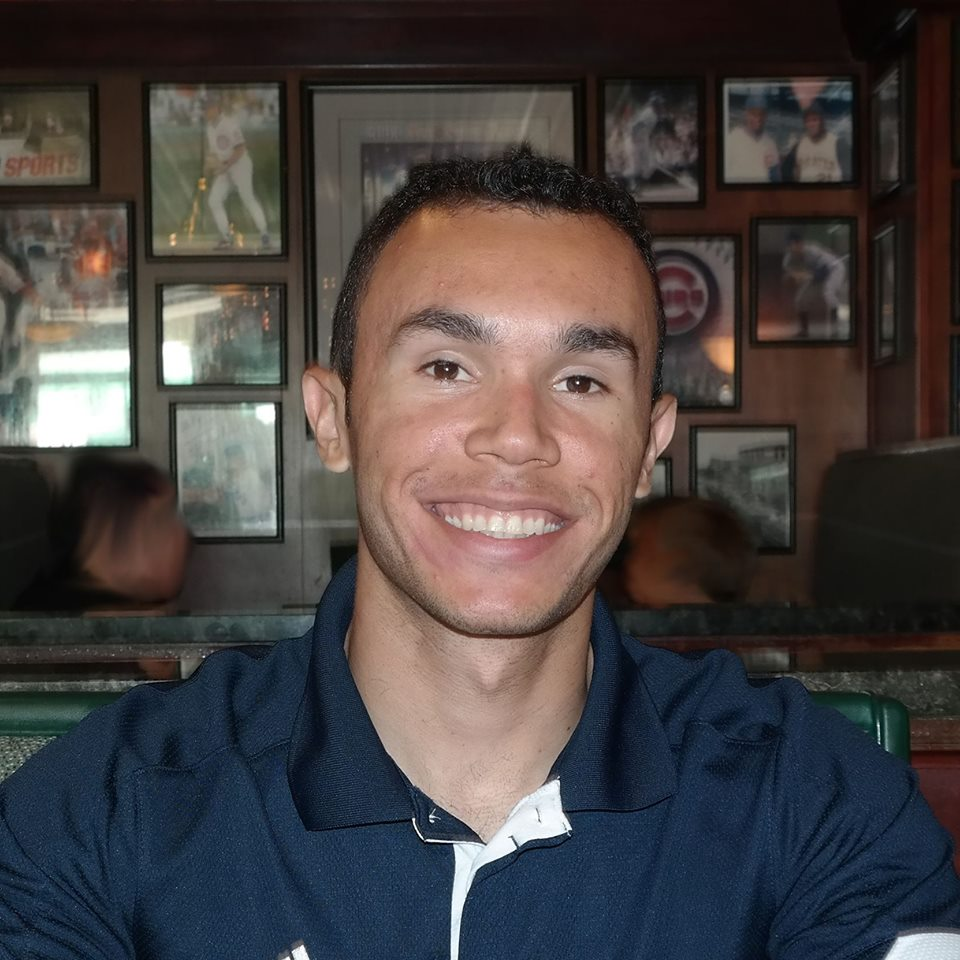

John W Thompson
John W Thompson
I am a senior at Loyola University of Chicago enrolled in their 5 year Software Engineering M.S./B.S. program. I am currently working as a Software Development Engineer at 4C Insights where I engineer software for a large single page web application. For more info check out my LinkedIn
 Joan Clarke
Joan Clarke
I am a Fulbright Scholarship recipient currently pursuing a Master’s Degree in Computer Science (with a focus in Information Technology) at the Graduate School of Loyola University Chicago. My goal is to work in fields of Web Design and Development, Database Programming, and Education. To develop my skills in these areas, I have pursued courses such as Client-Side Web Design, Database Programming at Loyola as well as HTML, CSS, Javascript and Web Development at The New Boston and Udemy online institutions. For more details about Joan Clarke visit: LinkedIn page.

Paulo Chaves da Silva Filho
I am a study abroad student. I came to the US to learn English and to take two semesters of Computer Science undergraduate classes. This semester is my last one at Loyola. I have experience as a web developer. A couple years ago I worked for a company for 3 years in my hometown developing a single page web application. In this job I acquired experience with technologies such as PHP, HTML, CSS, Javascript, MySql and PostgreSql. This semester I am also taking Web Services class, this class class has helped me a lot to develop my skills with web development working with Java and REST APIs.
Elisha S Mwita
A Graduate Student at Loyola University Chicago majored in Information Technology. My area of concentration is Security and Networking, this is my first Webdesign class using HTMLs, CSS and Java Script. It's an interesting field that I would like to dive deep in the future. I have basic knowledge of other computer languages like C# and C++ as well. More info about Elisha is here LinkedIn page.